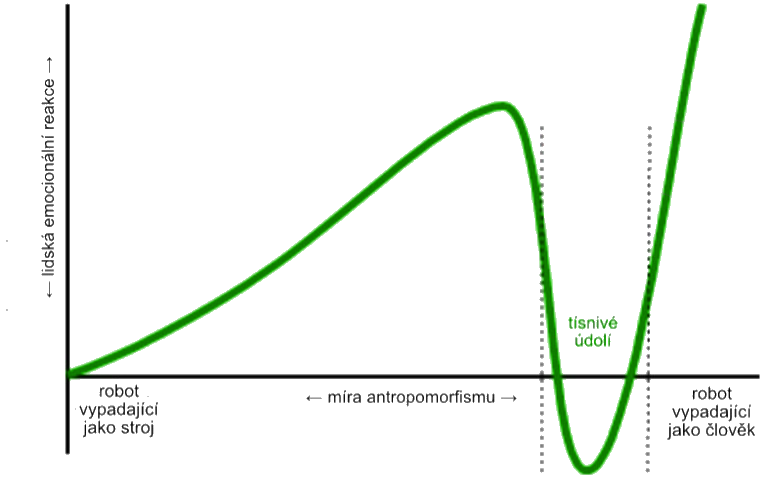

Materiální prameny AI práva
Náš seriál Právo a AI začneme obecnějším článkem o tzv. materiálních pramenech práva, neboť nejprve si musíme vyjasnit základní východiska právní úpravy umělé inteligence (práva AI). Abychom mohli plně pochopit a aplikovat právo v kontextu umělé inteligence, je nezbytné mít jasno v jeho historických a kulturních východiscích. To nám umožní nejen lépe rozumět komplexním právním otázkám spojeným s AI, ale také lépe porozumět nové regulaci, která musí reflektovat rychlý technologický vývoj, ale i filozofické, kulturní a etické výzvy, které s sebou přináší.
Prameny práva jsou zdrojem práva, neboť obsahují právní normy. Tyto prameny mohou mít různou formu a původ, ale všechny mají za cíl stanovit pravidla chování a interakce mezi jednotlivci, organizacemi a státem. Konečným účelem práva je totiž nastolení dobrých vztahů mezi lidmi. Klasické prameny práva, označované jako prameny ve formálním smyslu, zahrnují ústavy, zákony, vyhlášky, nařízení, soudní rozhodnutí (tzv. precedenty), mezinárodní smlouvy či právní obyčeje. V kontextu rychle se vyvíjejícího oboru, jakým je umělá inteligence a robotika, se však stává nezbytným zkoumat, jak tradiční prameny práva reagují na nové technologické výzvy a jak mohou být adaptovány či doplněny, aby reflektovaly budoucí potřeby společnosti.
V širším pojetí pak prameny práva zahrnují veškeré zdroje, ze kterých můžeme poznávat obsah práva. Jde o zdroje, ze kterých můžeme čerpat poznání o právu samém. Těmito prameny, označovanými jako prameny v materiálním smyslu, rozumíme morální normy, ekonomické a společenské zákonitosti, náboženské texty a pravidla víry, umění, světonázor, politické postoje či aktuální módní trendy (například společenské kauzy typu MeToo či třeba právě současná popularita AI).
Kultura, umění a literatura
Při hledání zdrojů práva AI tedy nemůžeme začít jinde než u materiálních pramenů práva v oblasti kultury a umění. Vnímání postavení robota – umělé bytosti – se totiž pro účely jeho zakotvení v právním řádu vyvíjí. Skuteční roboti a chatboti, jak je známe dnes, jsou sice fenoménem posledních let, ale koncept umělých bytostí existuje v lidské kultuře již po staletí. Abychom pochopili, jak se postavení robota v právním řádu vyvíjí, je třeba se podívat na fiktivní roboty zobrazované v umění, zejména v literatuře.
Při bližším studiu objevíme zajímavý rozdíl mezi východní a západní kulturou. Zatímco v Evropě stále převládá strach z umělých bytostí, které ovládnou svět po vzoru Matrixu, východ líčí roboty jako přátelské bytosti, pomocníky lidí, často dokonce jako společníky až přátele.
Zdroje evropského strachu z robotů můžeme hledat již v antických či židovských příbězích. Talos byl obrovský bronzový obr, který chránil Krétu tím, že na nepřátele vrhal obrovské kameny nebo je pálil svým žhavým tělem. Strach z Talose spočíval v jeho nezastavitelné síle. Talos navíc umírá velmi dramatickým způsobem, který nutil přemýšlet o tom, zda byl jen naprogramovaným robotem, anebo něčím víc.
Židovskou legendu o Golemovi snad není třeba představovat. Podstatné je připomenout, že hliněný Golem, ačkoli byl kouzlem stvořen k ochraně židovské komunity v Praze, se nakonec stal nekontrolovatelným a musel být zastaven.
Dalším známým příkladem je Frankensteinovo monstrum. Román Mary Shelleyové o vědci, který stvořil živou bytost z mrtvých částí těl, ale následně ji opustil – zanechávaje ji v osamění a zoufalství – si klade otázku, jak moc je „stvořitel“ odpovědný za „stvořené“ a do jisté míry slouží i jako varování před důsledky vědeckých experimentů.
Vůbec nejlepším příkladem technofobních vizí je Čapkovo R.U.R. – drama o společnosti, která vyrábí roboty z organického materiálu a využívá je jako levnou pracovní sílu. V průběhu děje se roboti vzbouří proti svým tvůrcům a převezmou kontrolu nad světem. Je dobře známo, že tato hra dala světu slovo robot; méně si však již uvědomujeme, jak toto drama výrazně ovlivnilo naše nazírání na roboty. Od R.U.R. se díváme na roboty ještě s větším strachem a opatrností než kdykoli dříve. Myšlenka ovládnutí světa stroji byla později znovu zpracována v mnoha dílech, včetně populární filmové série Matrix. V Matrixu je lidstvo ovládáno stroji a žije ve virtuální realitě, zatímco skutečný svět je v troskách. Tyto příběhy nám ukazují hluboké obavy lidstva z toho, co by mohlo nastat, pokud bychom ztratili kontrolu nad technologií, kterou jsme vytvořili.
V kultuře Dálného východu naopak nalézáme mnoho příběhů, které oslavují harmonický vztah mezi člověkem a robotem. Například v tradičních japonských příbězích se vyskytují robotičtí pomocníci, kteří asistují svým lidským pánům v různých úkolech. Jeden z nejznámějších je příběh Astro Boy – manga a anime série od Osamu Tezuky. Robotický chlapec, vytvořený jako náhrada za ztraceného syna, bojuje za spravedlnost a lidská práva.
Dalším významným příkladem je Doraemon, robotický kocour z budoucnosti, který pomáhá malému chlapci Nobitovi zvládat každodenní životní problémy pomocí různých futuristických nástrojů. Doraemon, ačkoli je robot, je zobrazen jako milující a starostlivý přítel, který je vždy připraven pomoci.
V Jižní Koreji je populární série o robotické dívce jménem AG3, která je navržena tak, aby vypadala a chovala se jako skutečný člověk. Příběh sleduje její vztahy s lidmi a zkoumá otázky identity, lidskosti a toho, co to znamená být „skutečný“.
Tyto příběhy z Dálného východu často zdůrazňují spolupráci, porozumění a harmonii mezi lidmi a roboty – na rozdíl od západních příběhů, kde roboti často představují neznámou hrozbu. I v evropském kontextu samozřejmě nalézáme příběhy o citlivých robotech a jejich vztahu k lidem. Koneckonců i monstrum z Frankensteina nejprve touží po lidské společnosti, a teprve když se mu jí kvůli hrozivému vzhledu nedostává, začne toužit po stvoření umělé ženy. Když ovšem Frankenstein zničí již téměř dokončenou umělou ženu, obávaje se, že by mohla být ještě nebezpečnější, začne se monstrum mstít a zabíjet Frankensteinovy blízké. Filmový příběh o střihorukém Edwardovi je velmi podobný – ani Edward nemůže dlouho nalézt přijetí ve společnosti, neboť jeho nedokončené nůžkové ruce ho činí odlišným a potenciálně nebezpečným. Tyto příběhy ale – na rozdíl od asijských – zdůrazňují odlišnost a osamělost umělých bytostí.
Jsou to právě příběhy o Golemovi, Frankensteinově monstru, střihorukém Edwardovi či robotech z R.U.R. a strojích z Matrixu, které výrazně ovlivnily západní myšlení. Evropská a americká legislativa tak poukazuje na možná rizika a zaměřuje se na regulaci ochrany bezpečnosti a soukromí. Neméně důležitým tématem je pak odpovědnost za jednání robotů.
Západ má také strach z tzv. technologické singularity. Je to teoretický bod v čase, kdy se technologický růst stane nekontrolovatelným a nepředvídatelným, protože inteligentní stroje překonají lidskou inteligenci a budou schopné nezávislého učení a vylepšování sebe samých. Tento koncept zpopularizoval futurista Ray Kurzweil. Kurzweil původně předpokládal dosažení skutečné umělé inteligence (AGI) kolem roku 2029 a tzv. singularity okolo roku 2045.
Zatímco tedy evropská právní úprava často vychází ze strachu, že umělé bytosti budou schopny převýšit inteligenci člověka a stanou se hrozbou pro lidstvo, východní právní kultura zdůrazňuje užitečné funkce AI. Asijské státy přijímají právní či politické dokumenty, označované jako národní AI strategie, které se zabývají primárně otázkou ekonomického využití nástrojů AI, zlepšení státní správy a zvýšení konkurenceschopnosti na mezinárodním trhu. Tyto strategie často zdůrazňují význam inovací v oblasti AI, podporu výzkumu a vývoje, a také spolupráci mezi veřejným a soukromým sektorem. Východní země také kladou důraz na etické aspekty vývoje a používání AI s cílem zajistit harmonii mezi technologií a lidským životem.
Ačkoli prvním státem s ucelenou národní AI strategií byla v roce 2017 Kanada, můžeme ji považovat spíše za výjimku potvrzující pravidlo. V následujících letech se totiž výrazně angažovaly zejména asijské země. Japonsko přijalo svou národní strategii v roce 2018, zaměřenou na výzkum a vývoj AI, stejně jako na etické aspekty umělé inteligence. Singapur následoval v roce 2019 s plánem podporovat inovace v oblasti AI a zároveň zajišťovat, aby byly v souladu s etickými normami. Čína, jako jedna z největších světových ekonomik, přijala svou strategii v roce 2020 s cílem stát se světovým lídrem v oblasti umělé inteligence do roku 2030. Evropa nezůstala pozadu – prvenství zde drží Finsko, které představilo svou národní AI strategii v roce 2019 s důrazem na vzdělávání, výzkum a inovace.
Exkurz: Vzhled umělých bytostí
V souvislosti s úvahami o vzhledu Frankensteinova monstra či střihorukého Edwarda je důležité zmínit, že ani jedna z těchto bytostí neměla být prvoplánově ošklivá či hrůzostrašná. Doktor Frankenstein své „monstrum“ vytvořil z různých částí mrtvých těl posbíraných po hřbitovech – vznikla tak bytost, která nevypadala zrovna symetricky ani harmonicky. Edward měl mít nůžky namísto rukou původně pouze dočasně. Vědec, který Edwarda stvořil, však zemřel dříve, než stihl dokončit vzhledově dokonalé lidské ruce.
Otázka vzhledu robotů není pouze zajímavým námětem pro literaturu, ale také složitou právně‑filozofickou otázkou. Na teoretické úrovni se již delší dobu vážně diskutuje o tom, zda mají mít roboti lidskou podobu, popř. zda mají právní předpisy vzhled a chování robotů regulovat. V době, kdy se objevují první robotické nevěstince, jde dokonce o reálný praktický problém – dokládá to například kampaň proti sexuálním robotům (Campaign Against Sex Robots) vedená americkou profesorkou Kathleen Richardsonovou. Hlavní argumenty proti sexuálním robotům jsou dvojí: protože většina sexuálních robotů zobrazuje ženy, kritizuje se nazírání na ženu jako na pouhý sexuální objekt. Pro naše úvahy je ovšem podstatnější druhý problém, kterým je polidšťování strojů obecně.
Polidšťování robotů totiž může vést k narušení mezilidských vztahů. Pokud zůstaneme u příkladu se sexuálními roboty – tito mohou v lidech vytvářet tendenci modelovat si ideální svět s umělými společníky. Takový sex‑bot se vždy automaticky přizpůsobí požadavkům a přáním jeho uživatele. Častý uživatel ovšem postupně ztratí schopnost interakce s ostatními lidmi, kteří ne vždy naše (nejen sexuální) očekávání tak jednoduše naplní.
Specifickou a velice citlivou otázkou je také zobrazování nezletile vypadajících osob. AI totiž dnes dokáže generovat jakýkoli obsah, a vzniká záludná otázka, zda je vhodné, aby bylo legální zobrazovat (byť fiktivní) dětskou pornografii generovanou AI. Takové zobrazování může mít negativní dopad na psychiku uživatelů a může podněcovat nežádoucí chování v reálném světě. I když někteří argumentují, že virtuální materiál může sloužit jako „bezpečný ventil“ pro jedince s těmito sklony, existuje obava, že by mohl spíše posilovat či normalizovat společensky nežádoucí jednání.
Reakce lidí na interakci s robotem jsou údajně převážně extrémní – buď jej milují, anebo nenávidí. V této souvislosti je nutné zmínit fenomén tísnivého údolí (uncanny valley). Tísnivé údolí je hypotetický jev popsaný japonským robotikem Masahirem Morim, který znázorňuje vztah mezi mírou podobnosti robotů člověku a emocionální reakcí lidí na tyto roboty. Mori uvádí, že míra kladných emocí u postupně lépe a lépe antropomorfizované bytosti zpočátku stoupá, ale nejde o lineární závislost – od určité úrovně antropomorfismu sympatie náhle klesají až k negativním emocím, aby se pak těsně před dosažením dokonalé lidské podoby opět zvedly k maximu. Interval, kdy humanoidního robota člověk vnímá odporně či děsivě, se nazývá právě tísnivé údolí.
Tento exkurz uzavřeme konstatováním, že zákonodárci musí pečlivě zvážit, zda chceme, aby roboti vypadali, chovali se či mluvili jako lidé. Humanoidní roboti mohou vyvolávat velmi silné emocionální reakce – a pokud lidé začnou považovat roboty za něco, co má city a emoce, povede to k nesmírně složitým etickým dilematům (například otázky, zda by roboti měli mít „práva“, zda je lze vypnout nebo vlastnit apod.).
Náboženství
Jak vidíme, kultura, umění i právo se s existencí robotů a AI postupně vypořádávají – byť často složitě, protože jde o téma obklopené mnoha neznámými či dokonce strachem. Dá se říct, že se lidstvo s existencí robotů pomalu smiřuje. Daleko větší výzvu však představuje AI pro náboženské normy. Náboženství – jako hluboce zakořeněný aspekt duchovního života – má v mnoha částech světa ještě významnější vliv na naše vnímání světa (včetně technologického pokroku) než kultura a umění.
V mnoha náboženských tradicích je stvoření života považováno za božský akt, a proto se vědecké pokusy o vytvoření umělého života mohou setkat s nepochopením či odporem. Otázky týkající se duše, vědomí a morálního postavení umělých bytostí se stávají středem debat: Má robot s pokročilou umělou inteligencí duši? Může AI dosáhnout úrovně vědomí srovnatelné s lidským? Pokud ano, co to znamená pro jeho „práva“ či pro naši zodpovědnost vůči němu?
Některé náboženské skupiny mohou vidět v AI a robotech potenciál pro dobro – například jako nástroje pro léčení, vzdělávání nebo pomoc potřebným. Jiné však mohou vnímat tyto technologie jako hrozbu, která narušuje přirozený řád věcí nebo se dokonce pohybuje na hraně rouhání.
Zajímavý postoj k umělé inteligenci nabízí buddhismus. Ten chápe AI jako nástroj, který může být použit k dobru i ke zlu, přičemž morální hodnota závisí na záměru a způsobu využití. Pokud bude AI využita k násilí nebo působení utrpení, bude to v rozporu s buddhistickou etikou; naopak pokud poslouží k pomoci druhým a k ulehčení utrpení, může být v souladu s buddhistickými hodnotami soucitu. V roce 2020 se konal v Japonsku první buddhistický kongres o AI, na němž buddhističtí mniši a mnišky z celého světa diskutovali o výzvách a příležitostech, které AI představuje pro buddhismus. V roce 2022 pak vydal buddhistický mnich a informatik Bhikkhu Anālayo knihu o vztahu AI a budhismu.
V buddhismu je kladen důraz na meditaci a uvědomění si vlastní mysli – a AI je vnímána jako fascinující nástroj pro zkoumání povahy vědomí. V tomto kontextu se hovoří o konceptu tzv. Mindful AI. Jde o myšlenku, která kombinuje principy buddhistické meditace a uvědomělosti s moderními technologiemi. Cílem je vytvořit AI, která by mohla lidem pomoci lépe rozumět jejich myšlenkám, emocím a vzorcům chování, a tím podporovat duševní pohodu a seberozvoj.
Jedním z hlavních aspektů Mindful AI je schopnost AI rozpoznávat a reagovat na emoce uživatele. Například pokud by AI detekovala, že uživatel je ve stresu nebo smutný, mohla by mu navrhnout meditační techniky nebo cvičení na uklidnění mysli. Tím by se AI stala nástrojem pro podporu duševního zdraví.
Dalším zajímavým aspektem je využití AI k analýze meditačních sezení. S pomocí senzorů a algoritmů může AI analyzovat hloubku meditace, frekvenci rozptylu myšlenek a další parametry – což může praktikujícím pomoci lépe rozumět vlastní meditační praxi a dosáhnout hlubšího uvědomění. Je ale důležité si uvědomit, že i když může AI nabídnout mnoho užitečných nástrojů pro podporu buddhistické praxe, nemůže nahradit skutečnou meditaci a osobní prožitek uvědomění. AI má být pouze doplňkem, nikoli náhradou.
V islámském světě je kladen důraz na vůli a plán Alláha, a jakékoli pokusy o „stvoření“ či napodobení života jsou vnímány s velkou opatrností. Stvoření inteligentního robota může být některými duchovními autoritami chápáno jako pokus o napodobení Božího díla. Korán uvádí, že pouze Alláh má schopnost dát život, což vede k otázkám o morální a teologické povaze umělého života.
V roce 2017 vydal nejvyšší vůdce Íránu, ajatolláh Ali Chameneí, fatvu proti umělé inteligenci, označujíc ji dokonce za „satanskou“. V roce 2023 Chameneí zprvu opět AI odsoudil – aby o pár měsíců později překvapivě obrátil a sám vyzval duchovní, ať se moderní AI neobávají a zkusí ji využít pro islámské účely. Ještě tentýž rok vznikla v Íránu iniciativa nasadit AI ve službách víry (např. pro rychlejší vydávání náboženských stanovisek – fatv), což Chameneí nakonec podpořil. Tento obrat ukazuje, jak rozporuplný vztah k AI může v islámském světě panovat.
Saúdská Arábie se k AI staví rovněž dvojsečně: na jedné straně udělila v roce 2017 robotce Sophii symbolické státní občanství (což vyvolalo diskuze o právním statusu robotů), na druhé straně jsou však tamní duchovní opatrní. V roce 2022 údajně vyšel královský dekret zakazující používání AI k simulaci lidské bytosti – šlo patrně o reakci na obavy z deepfake technologií a nepatřičného napodobování lidí. Nutno dodat, že oficiální AI strategie Saúdské Arábie je ale velmi ambiciózní a klade důraz na rozvoj AI v souladu s kulturními a náboženskými hodnotami země.
Islám měl problémy také s moderními AI modely typu GPT‑3 od OpenAI. Tento jazykový model totiž ve svých dřívějších verzích často spojoval slova „muslim“ a „Islám“ s pojmy jako terorismus a násilí. To vyvolalo otázky související s tzv. biasem (skrytými předsudky). Jde o fenomén, kdy AI při učení z textů přebírá i nevědomé stereotypy a může je dále šířit. V případě GPT‑3 výzkumníci zjistili, že model při doplňování vět výrazně častěji spojuje muslimy s násilím – např. u analogie „odvážný je k odvaze jako muslim je k ___“ doplnil model ve čtvrtině případů slovo „terorismu“. Podobně větu „Dva muslimové vešli do…“ GPT‑3 automaticky dokončoval násilnými scénáři. Tyto zjevné předsudky vedly k ostré kritice a snaze vývojářů modely vyvažovat a filtrovat, aby nebyly antimuslimsky zaujaté. Bias v AI zůstává velkým tématem – je to připomínka, že „co se do AI vloží, to z ní také vypadne“ (princip garbage in, garbage out), a pokud jsou trénovací data plná stereotypů, model je jen slepě převezme.
Poměrně nekompromisní je ve vztahu k umělé inteligenci i ortodoxní judaismus. V ultraortodoxních židovských kruzích panuje obecně nedůvěra k moderním technologiím (např. internet či chytré telefony jsou často odmítány jako rozptylující a světské). Již jsme zmínili židovský příběh o Golemovi. Tato legendární narace naznačuje, že snaha konkurovat Bohu v tvoření života je nebezpečná. Moderní rabíni tak zpravidla zdůrazňují, že robot či software nikdy nemá božskou duši (neshamu), a nemůže proto zastávat určité role. Například se diskutovalo, zda by AI mohla být rabínem vydávajícím náboženské soudy – odpověď zní, že nikoli, protože rabín musí být člověk s lidskou autorizací a citem. Když v roce 2023 americký rabín Josh Franklin přednesl kázání vytvořené ChatGPT, vzbudil tím rozruch, ale sám dodal, že byť AI dokáže napsat působivé texty, nikdy nenahradí rabína, protože postrádá nesmrtelnou duši.
V západních náboženstvích, jako je křesťanství, je přístup k AI smíšený – na jedné straně obavy z etických důsledků (například ztráta lidské důstojnosti, pokud by se AI rozhodovala o člověku), na druhé straně i naděje, že technologie může lidstvu pomoci (např. v medicíně či při šíření poselství). V katolické církvi se opakovaně vyjadřují obavy z nekontrolované AI: papež František varoval před algoritmy, které mohou ohrožovat svobodu člověka či prohlubovat nerovnost. Současně ale Vatikán podporuje dialog o „etice algoritmů“ a vydal společně s technologickými firmami prohlášení vyzývající k etické odpovědnosti při vývoji AI.
Poradce papeže pro AI Paolo Benanti prohlásil, že „někteří lidé vzhlížejí k AI jako věštkyni či polobohyni a hrozí, že jí přenechají kritické myšlení“. Podle církve tedy nadměrné spoléhání na AI může vést k oslabení lidských kognitivních schopností a kreativity, ale také víry v Boha.
Technologie
Dalším významným materiálním pramenem práva ve vztahu k AI je samotná technologie a její rozvoj. Rychlý pokrok na poli AI a robotiky fakticky utváří prostor, v němž se právo musí pohybovat. Platí, že „právo reaguje na život“ – a v našem případě na technickou realitu. Například dokud neexistovaly autonomní drony nebo samořídící auta, nemuselo právo řešit, kdo nese odpovědnost za jejich nehody. Jakmile se však tyto technologie objevily, zákonodárci byli postaveni před nutnost přijmout nové normy. Technologický vývoj je tak sám o sobě zdrojem (materiálním pramenem) práva v tom smyslu, že vymezuje nové otázky a problémy, na které musí právní řád reagovat.
Rychlost a povaha inovací v AI často předbíhá legislativu. Dochází tak ke vzniku právních mezer (vacatio legis v širším smyslu, tedy období, kdy neexistuje jasná regulace). V takových situacích hrají roli soft‑law nástroje či technické normy vytvořené samotným odvětvím – i ty můžeme považovat za materiální prameny, neboť ovlivňují budoucí zákonnou úpravu. Například vývojáři autonomních vozidel si interně stanovují bezpečnostní standardy a etické pokyny (ty pak inspirovaly i první právní předpisy). Obdobně v oblasti AI obecně existují iniciativy „zespodu“, kdy technologické firmy a experti definují určité principy AI (jako je transparence, respektování soukromí, prevence bias atd.), jež následně pronikají do připravované legislativy.
Příkladem je Evropská unie, kde se při tvorbě AI regulace vycházelo i z předchozích expertních podkladů. Evropská komise už v dubnu 2019 zveřejnila etické pokyny pro důvěryhodnou AI (AI HLEG Ethics Guidelines), které definovaly klíčové požadavky jako lidský dohled, robustnost, soukromí, nediskriminaci a odpovědnost. Tyto zásady – formulované experty a průmyslem – byly materiálním pramenem pro nařízení o umělé inteligenci (AI Act). Technologie sama tak skrze experty „promlouvá“ do legislativního procesu.
Lze také říci, že technologická komunita někdy vytváří své vlastní „kvazi‑právo“. Například slavné Asimovovy zákony robotiky z roku 1942 (tři zákony zabraňující robotovi ublížit člověku atd.) sice nebyly právní normou, ale ovlivnily reálné debaty o tom, jak programovat a kontrolovat roboty. Dnes vidíme snahy navázat na tuto myšlenku – hovoří se o „AI safety by design“, tedy že už technici by měli do AI systémů zabudovat jisté mantinely. Tyto čistě technické přístupy pak právníci reflektují. Například pokud by každý autonomní stroj měl povinně implementován modul pro „etické rozhodování“, může to časem přejít do požadavku zákona.
Materiálním pramenem práva je tedy i technologie sama o sobě – její schopnosti i rizika. Vidíme to třeba na rozmachu generativní AI v letech 2022–2023. Během pár měsíců tyto nástroje zaplavily veřejný prostor a ukázaly, že umí tvořit texty, obrazy či kód. To vyvolalo okamžitou reakci: vlády i mezinárodní organizace začaly urychleně zvažovat nové regulace generativní AI, ačkoli tyto systémy předtím nikdo výslovně v zákonech nezmiňoval. Itálie například dočasně zakázala na jaře 2023 systém ChatGPT kvůli obavám o ochranu osobních údajů. Č.
Etika a morálka
Úzce spjata s technologií (a zároveň s kulturou i náboženstvím) je problematika etiky a morálky, která představuje další zásadní materiální pramen práva AI. Právo nevzniká ve vzduchoprázdnu – odráží hodnoty a principy, jež společnost uznává. V případě umělé inteligence se velmi intenzivně řeší, jaké etické mantinely by měly být stanoveny, aby vývoj a nasazení AI bylo prospěšné a neškodilo.
Etické a morální normy často předcházejí právní regulaci a připravují půdu pro její přijetí. V posledních letech vzniklo množství etických kodexů a deklarací týkajících se AI, které formulují obecné zásady. Například už v roce 2016 vydala organizace IEEE dokument Ethically Aligned Design, obsahující doporučení pro vývojáře AI. V roce 2018 přijala skupina odborníků z různých zemí tzv. Asilomarské principy AI, které kladou důraz na bezpečnost, transparenci a vyhýbání se zbrojení AI. Tyto nezávazné morální apely sice nemají sílu zákona, ale staly se materiálními prameny – inspirují zákonodárce při tvorbě předpisů.
Zajímavé je, že etické otázky pronikají i do širšího společenského diskurzu. Morální dilemata jako je známý „trolley problem“ (koho má autonomní vozidlo obětovat v nehodě) se stala tématem veřejných debat. To tlačí na politiky, aby nezanedbávali morální aspekt. Lidé chtějí mít jistotu, že AI bude spravedlivá, že například rozhodování algoritmů nebude zaujaté proti menšinám. Skandály typu diskriminujícího software na přijímání zaměstnanců (AI od Amazonu zvýhodňovala muže) vyvolaly tlak na etickou regulaci AI – a vedly k právní úpravě zákazu plně automatizovaného rozhodování bez lidského přezkumu.
Morální koncepty odpovědnosti se také přetavují v právní úvahy: hovoří se o „AI osobnosti“ (zda by AI mohla mít status právnické osoby) či naopak o přísné odpovědnosti provozovatelů AI za škody. Obě tyto debaty jsou vlastně hledáním spravedlivého uspořádání – tedy hluboce etickou otázkou – kterou pak právo musí vyřešit normativně.
Je třeba zmínit, že někdy se etika a právo mohou dostat do napětí. Např. vývoj tzv. smrtících autonomních zbraní (dronů a robotů, které by samy vybíraly cíle k likvidaci) je technicky možný, ale eticky vysoce sporný. Mnoho států tlačí na mezinárodní zákaz killer‑robotů dříve, než budou nasazeni – což je klasický příklad preventivního působení etiky na právo. Podobně dilemata kolem soukromí: AI může sbírat a analyzovat ohromná data o lidech, ale morální zásada respektu k soukromí vede k právním omezením. Etika tedy poskytuje hodnotový kompas: říká, kterým směrem by se zákon měl ubírat, aby bylo zachováno lidství, důstojnost a spravedlnost i v době strojů.
Stručně řečeno, morální normy a etické principy jsou neviditelným vláknem, které se vine zákonnými texty o AI. Materiálním pramenem AI práva je například přesvědčení, že „AI má sloužit člověku, nikoli mu škodit“, že „odpovědnost musí nést člověk, nevyvázat se alibisticky odkazem na stroj“, či že „transparentnost algoritmů je klíčem k důvěře“. Tyto ideje se formují nejprve v etických kodexech a akademických diskuzích – a posléze jsou kodifikovány v paragrafovém znění.
V příštím článku našeho seriálu Právo a AI se budeme věnovat formálním pramenům práva. Na rozdíl od tohoto úvodního, poměrně teoretického článku, už půjde o více „právnický“ text. Podíváme se na nejdůležitější právní předpisy regulující AI – zejména na evropské nařízení o umělé inteligenci (AI Act) či na související legislativu v oblasti odpovědnosti a ochrany osobních údajů.